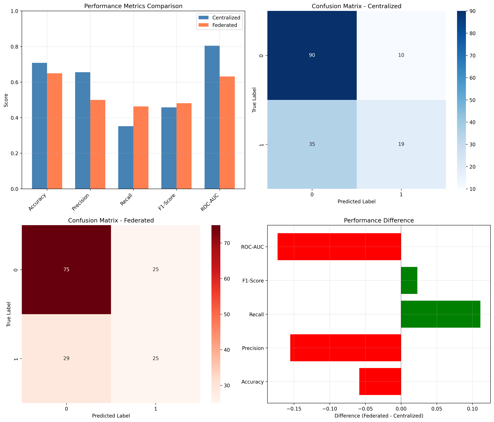
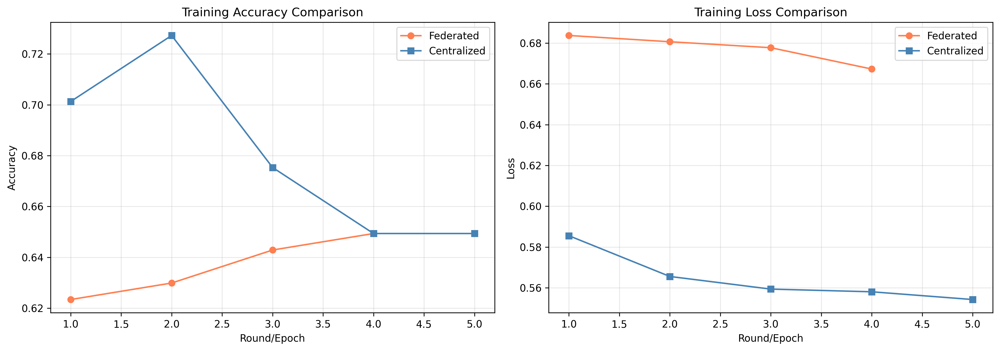

Live Results
Centralized
70.8%
Accuracy80.4%
ROC-AUCFederated + DP
64.9%
Accuracy63.1%
ROC-AUCModel Comparison


Quick Start
git clone https://github.com/Pradhakshini-p/Privacy-First-Federated-Learning-.git
cd Privacy-First-Federated-Learning-
pip install -r requirements.txt
python launch.py --mode full
python launch.py --mode apiArchitecture
- Flower + FedAvg — 3 hospital clients, server aggregation
- DP-SGD — gradient clipping and noise injection
- PyTorch MLP — Pima Indians Diabetes dataset (768 patients)
- Flask API —
/health,/predict,/predict_batch
Docker (GitHub Container Registry)
docker pull ghcr.io/pradhakshini-p/privacy-first-federated-learning-:latest
docker run -p 5000:5000 ghcr.io/pradhakshini-p/privacy-first-federated-learning-:latest python api.py